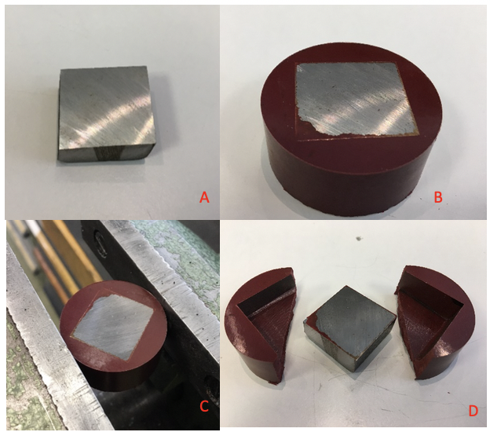
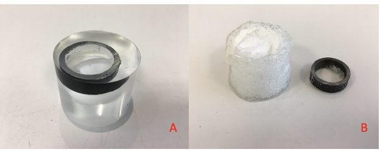
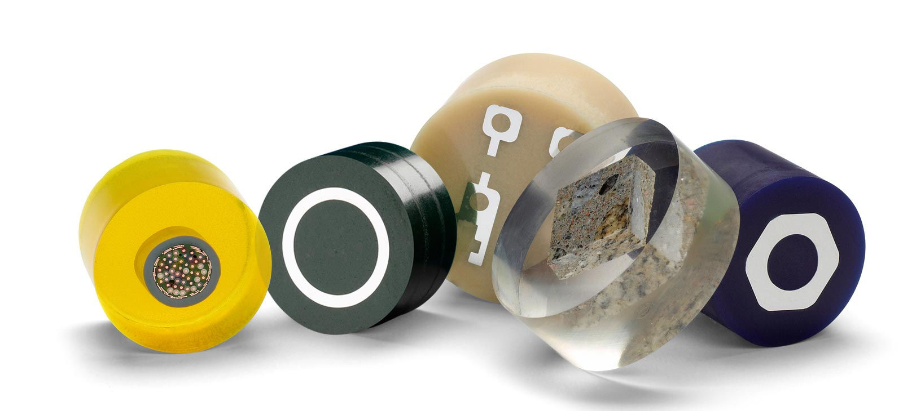

Hot and Cold Mounting of Specimens
Home
FAQs
Precautions
Observations
Procedure
Theory
Aim



Observations :
Sample is mounted. This protects the specimen edge and maintains the integrity of a materials surface features
Voids are filled if the material is porous.
Specimen is now ready for further operations like polishing and etching.